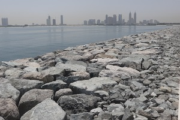
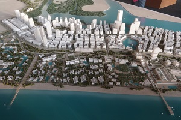
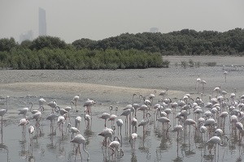

Coastal Vulnerability in the UAE
Rising sea levels, population growth along coastlines and increasing hazards associated with coastal storms have set coastal communities on a collision course with the risks posed by climate change.
AGEDI and CCRG are engaging UAE planners and stakeholders to co-develop a decision-support tool to highlight where natural habitats play an important role in protecting coastal people and assets.
- 
- 
- 
")